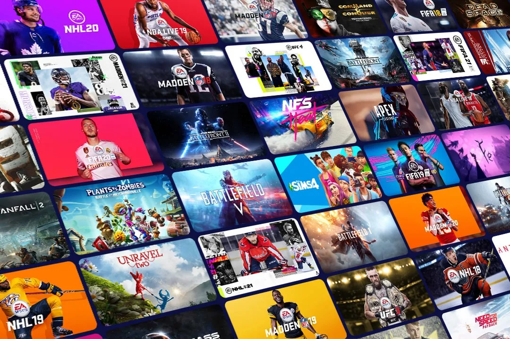
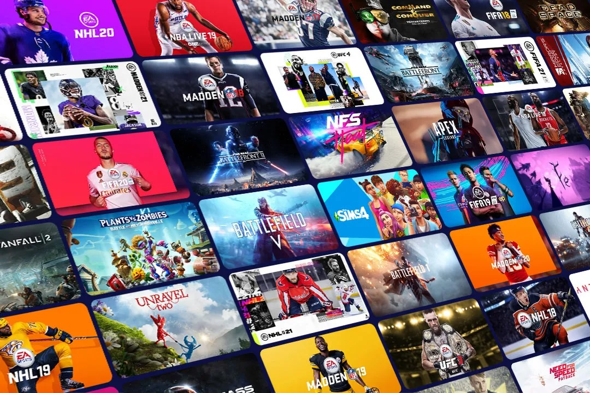

Here, the project leverages advanced statistical techniques and machine learning models to predict future sales and support strategic decision-making in the video game industry.

As a lover of James Bond Movies, I decided to do a fun project on all the 27 movies. This project explores the financial and critical performance of James Bond movies over time, Return on Investment (ROI), budget, box office performance, and audience ratings.

This analysis addresses skin cancer classification by leveraging an ensemble of deep learning models, specifically AlexNet and VGG16.The findings suggest that ensemble methods can effectively enhance classification accuracy in skin cancer detection.

This project applies unsupervised machine learning techniques to segment customers based on their purchasing behaviors. By clustering customers, this project identifies different customer groups, which can inform targeted marketing strategies and improve business decision-making.

This project focuses on predicting the prices of used cars using machine learning techniques. By leveraging advanced feature engineering, dimensionality reduction, and multiple machine learning models, the goal is to create a reliable prediction system to help buyers and sellers in the used car market.

TThis project analyzes and predicts NHS Accident & Emergency (A&E) performance, focusing on patient wait times and hospital efficiency.The goal is to provide data-driven insights that help improve patient experience and hospital management.